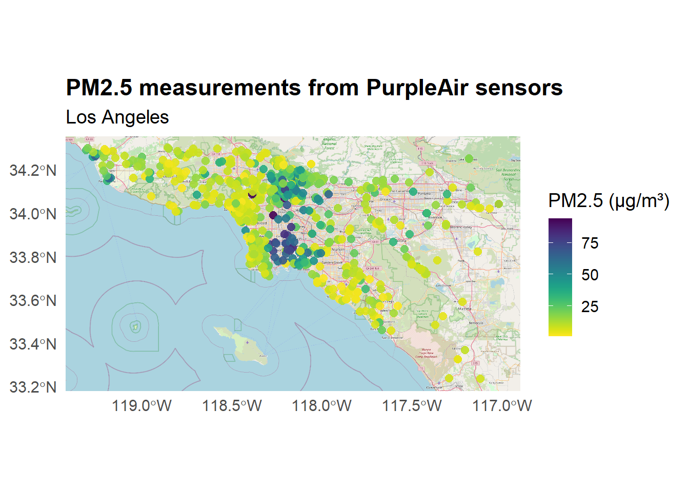

library(sf)
library(gstat)
library(ggplot2)
library(INLA)
library(fmesher)
library(dplyr)
library(ggspatial)
library(viridis)
library(patchwork)Practical 3 - Spatial prediction of PM2.5 in Los Angeles
Introduction
Airborne particulate matter (PM) refers to a diverse mix of microscopic particles suspended in the air. These can include solid fragments, liquid droplets, or particles with a solid core and liquid coating. PM varies greatly in shape, size, and chemical composition, ranging from organic and elemental carbon to inorganic salts and metal compounds. For regulatory and health studies, particles are categorized by size. Fine particles (PM2.5) are those with diameters of 2.5 microns or smaller, and are of particular concern due to their ability to penetrate deep into the respiratory system.
In this practical, we use data from the PurpleAir sensor network to model the spatial distribution of PM2.5 in Los Angeles (USA) using the INLA-SPDE approach. Data were downloaded from the website https://www2.purpleair.com
PurpleAir sensors empower individuals and communities to monitor and share hyper-local, real-time air quality data, fostering transparency, awareness, and action for cleaner air. Through the analysis of these data we can identify environmental patterns and make data-driven inferences to support policy and intervention.
Today we perform an analysis using spatial techniques and in particular INLA-SPDE approach.
Load packages
Load and inspect data
air <- read.csv("air.csv")
summary(air$pm2.5_cf_1_a) Min. 1st Qu. Median Mean 3rd Qu. Max.
1.006 6.045 11.034 18.253 23.279 93.990 The data we are dealing with have information on the location of each sensor through longitude and latitude values. Therefore we specify that we are working with geographic Corrdinate Reference System (CRS) that references locations using longitude and latitude values. The standard latitude/longitude projection based on the WGS84 datum is EPSG: 4326
air_sf <- st_as_sf(air, coords = c("longitude", "latitude"), crs = 4326)Visualise sensors in Los Angeles
Now we visualize the sensors in Los Angeles. We use OpenStreetMap (OSM) tiles as a background to provide geographic context for the sensor locations. OSM is a collaborative project that provides free and editable maps of the world.
ggplot() +
annotation_map_tile(type = "osm", zoomin = 1) +
geom_sf(data = air_sf, aes(color = pm2.5_cf_1_a), size = 2.5, alpha = 0.9) +
scale_color_viridis(name = "PM2.5 (µg/m³)", option = "D", direction = -1) +
theme_minimal(base_size = 14) +
labs(title = "PM2.5 measurements from PurpleAir sensors",
subtitle = "Los Angeles"
) +
theme(plot.title = element_text(face = "bold"),
legend.position = "right"
)
We also check the distribution of the data. The code below creates a histogram with bins of width 5 µg/m³, allowing for a visualization of the distribution of particulate matter concentrations:
ggplot(air_sf, aes(x = pm2.5_cf_1_a)) +
geom_histogram(binwidth = 5, fill = "steelblue", color = "white") +
labs(title = "Histogram of PM2.5 Concentrations",
x = "PM2.5 (µg/m³)",
y = "Frequency") +
theme_minimal()The data are characterized by a long tail on the right, thus we take the log transformation of PM2.5 to reduce skewness and stabilize variance:
air_sf <- air_sf %>%
mutate(log_pm25 = log(pm2.5_cf_1_a))
summary(air_sf$log_pm25) Min. 1st Qu. Median Mean 3rd Qu. Max.
0.005982 1.799232 2.400981 2.441434 3.147552 4.543188 # Visualise original and transformed distribution
p1 <- ggplot(air_sf, aes(x = pm2.5_cf_1_a)) +
geom_histogram(binwidth = 5, fill = "steelblue", color = "white") +
labs(title = "PM2.5", x = "PM2.5 (µg/m³)", y = "Frequency") +
theme_minimal()
p2 <- ggplot(air_sf, aes(x = log_pm25)) +
geom_histogram(binwidth = 0.2, fill = "darkgreen", color = "white") +
labs(title = "log(PM2.5)", x = "log(PM2.5)", y = "Frequency") +
theme_minimal()
p1 + p2Reproject data to UTM (Zone 11N)
Our data are characterized by a geographic CRS that references locations using longitude and latitude values. In order to work with meters instead of degrees, we use st_transform() from the R package sf to transform the CRS. Specifically, we use the UTM projection (Zone 11N) that is given by EPSG code 32611.
air_utm <- st_transform(air_sf, crs = 32611)Analysis of the variogram
We can perform an exploratory variogram analysis of PM2.5 data. From the variogram plot, we can get a rough idea of the spatial range of correlation, i.e., the distance beyond which spatial dependence fades out and the partial sill.
This can guide choice of the Penalised Complexity (PC) priors in the spde model. In fact the variogram can gives us insight into the spatial autocorrelation structure of the data:
The distance at which the variogram flattens (range) can inform the prior for the spatial range in the SPDE model via
prior.range
The partial sill (i.e., the height of the variogram plateau) provides a rough estimate of the spatial variance, which can guide the choice of the prior standard deviation via
prior.sigma.
# Compute empirical variogram
emp.vario <- variogram(log_pm25 ~ 1, data = air_utm)
# Plot the variogram
plot(emp.vario, main = "Empirical variogram of log(PM2.5)")
# theoretical variogram
theo.vario <- fit.variogram(emp.vario, vgm(c("Mat")))
plot(emp.vario, model=theo.vario)theo.vario model psill range kappa
1 Nug 0.3260515 0.000 0.0
2 Mat 0.8157796 9996.947 0.5We have obtained a range of approximately 9997 m, which can support a prior for the range such as prior.range = c(10000, 0.5 which means we expect the range to be ~10 km with 50% prior probability.
Likewise, a partial sill of 0.8158 also provide some insights and can support a prior for the standard deviation of the spde model such as prior.sigma = c(0.9, 0.01) to reflect that the standard deviation is likely close to the square root of 0.8158.
Create the grid for the predictions
We want to obtain predictions of PM2.5 over the entire Los Angeles area. Therefore, we need to define a grid that covers the region of interest and on which we will compute the predictions. This grid is will be used in combination with the spatial mesh to project the latent spatial field and derive predictions at unsampled locations. Here we create a grid of 100 x 100 meters. Remember to assign to the grid the same CRS of the data to ensure consistency when projecting spatial fields.
coords <- st_coordinates(air_utm)
xrange <- range(coords[,1])
yrange <- range(coords[,2])
pred_grid <- expand.grid(
x = seq(xrange[1], xrange[2], length.out = 100),
y = seq(yrange[1], yrange[2], length.out = 100)
)
pred_sf <- st_as_sf(pred_grid, coords = c("x", "y"), crs = 32611)
pred_coords <- st_coordinates(pred_sf)Model the data
Create spatial mesh
We create a two-dimensional mesh to define the set of basis functions using function inla.mesh.2d() or the newer function fm_mesh_2d_inla from the R package fmesher. Note that there is no rule to determine the right size and spatial extension of the mesh. It is up to the analyst to decide the mesh parameters, which obviously change from case to case. This triangulation defines the basis of functions that will be used to approximate the spatial process with Matérn covariance.
#mesh <- inla.mesh.2d(loc = coords, max.edge = c(5000, 20000), cutoff = 3000)
mesh <- fm_mesh_2d_inla(loc = coords, max.edge = c(5000, 20000), cutoff = 3000)
plot(mesh)
points(coords, col = "red", pch = 16)Define SPDE model
Now we use the inla.spde2.pcmatern function to build the SPDE model on the mesh, using a PC prior for the parameters (alternative option is to use the simple inla.spde2.matern()). This function requires, among other arguments, the mesh and the alpha parameter. The alpha parameter controls the smoothness of the spatial process. The default value of the parameter is 2 (for the details, you can type in R ? inla.spde2.pcmatern)
# ? inla.spde2.pcmatern
# spde model
spde <- inla.spde2.pcmatern(mesh = mesh, alpha=2,
prior.range = c(10000, 0.5), #P(range<10000)=0.5
prior.sigma = c(0.9, 0.01)) #P(sd>0.9)=0.01Define the index set
Next we define the index set, which is a necessary list of named index vectors for the SPDE model. Here where we provide the effect name (spatial.field) and the number of vertices in the SPDE model (spde$n.spde) . This function generates a list with the vector spatial.field ranging from 1 to spde$n.spde. Additionally, it creates two vectors, spatial.field.group and spatial.field.repl, containing all elements set to 1 and lengths equal to the number of mesh vertices.
spde$n.spde # number of vertices in the SPDE model[1] 2237s.index <- inla.spde.make.index("spatial.field", n.spde = spde$n.spde)
lengths(s.index) spatial.field spatial.field.group spatial.field.repl
2237 2237 2237 Define projection matrices for the observation and prediction location
We use the inla.spde.make.A() function of R-INLA passing the mesh (mesh) and the coordinates (coords) to construct a projection matrix \(A\) that projects the GMRF from the observations to the mesh nodes. We also create a projection matrix for the prediction locations.
A.est <- inla.spde.make.A(mesh = mesh, loc = coords)
A.pred <- inla.spde.make.A(mesh = mesh, loc = pred_coords)Prepare data for INLA
Now we prepare the data. In detail, we now create a stack with the data for estimation and prediction that organizes data, effects, and projection matrices. We create stacks for estimation (stack.est) and prediction (stack.pred) using tag to identify the type of data, and then we join the stacks.
stack.est <- inla.stack(
data = list(y = air_utm$log_pm25),
A = list(A.est, 1),
effects = list(spatial.field = s.index$spatial.field,
intercept = rep(1, nrow(air_utm))),
tag = "est"
)
stack.pred <- inla.stack(
data = list(y = NA),
A = list(A.pred, 1),
effects = list(spatial.field = s.index$spatial.field,
intercept = rep(1, nrow(pred_sf))),
tag = "pred"
)
stack.full <- inla.stack(stack.est, stack.pred)Run the INLA model
Finally we run the model to obtain the prediction of PM2.5 for Los Angeles on a regular grid. Note that in the formula we remove the default intercept (adding 0) as in the INLA-SPDE approach we need to define it in the stack. In control.predictor we set compute = TRUE to compute the posteriors of the predictions. Here we also compute the WAIC (Watanabe-Akaike information criterion), which is a measure of goodness of fit.
formula <- y ~ 0 + intercept + f(spatial.field, model = spde)
result_pred <- inla(formula,
data = inla.stack.data(stack.full),
control.predictor = list(A = inla.stack.A(stack.full), compute = TRUE),
control.compute = list(waic = TRUE))Results
We check the final results using the summary function:
summary(result_pred)Time used:
Pre = 0.528, Running = 3.01, Post = 0.262, Total = 3.8
Fixed effects:
mean sd 0.025quant 0.5quant 0.975quant mode kld
intercept 2.283 0.155 1.965 2.286 2.585 2.286 0
Random effects:
Name Model
spatial.field SPDE2 model
Model hyperparameters:
mean sd 0.025quant 0.5quant
Precision for the Gaussian observations 1.87e+00 0.113 1.66e+00 1.87
Range for spatial.field 2.58e+04 5938.193 1.65e+04 25045.75
Stdev for spatial.field 6.14e-01 0.073 4.85e-01 0.61
0.975quant mode
Precision for the Gaussian observations 2.10e+00 1.86e+00
Range for spatial.field 3.98e+04 2.33e+04
Stdev for spatial.field 7.71e-01 5.99e-01
Watanabe-Akaike information criterion (WAIC) ...: 1702.45
Effective number of parameters .................: 85.06
Marginal log-Likelihood: -900.33
is computed
Posterior summaries for the linear predictor and the fitted values are computed
(Posterior marginals needs also 'control.compute=list(return.marginals.predictor=TRUE)')Map the results
Finally, we are ready to map the predictions. The indices of the rows corresponding to the predictions can be obtained with the inla.stack.index() function by passing stack.full and specifying the tag pred.
We create the variable pred_mean with the posterior mean and pred_sd with the posterior standard deviation. Also, extract 95% credible interval bounds, i.e. pred_lower and pred_upper.
NOTE: since we are using a Gaussian model, the fitted values coincide with the linear predictor. Therefore, we can equivalently extract the posterior summaries using either summary.fitted.values or summary.linear.predictor. In this practical, we use summary.linear.predictor for consistency with future examples where the model is not Gaussian.
index.pred <- inla.stack.index(stack.full, tag = "pred")$data
# extract posterior mean
pred_mean <- result_pred$summary.linear.predictor[index.pred, "mean"]
# extract posterior standard deviation
pred_sd <- result_pred$summary.linear.predictor[index.pred, "sd"]
pred_sf$pm25 <- pred_mean
pred_sf$pm25_sd <- pred_sd
# Also extract 95% credible interval bounds
pred_lower <- result_pred$summary.linear.predictor[index.pred, "0.025quant"]
pred_upper <- result_pred$summary.linear.predictor[index.pred, "0.975quant"]
pred_sf$pm25_lower <- pred_lower
pred_sf$pm25_upper <- pred_upperPlot predicted PM2.5 mean
# Predicted PM2.5 mean
ggplot() + geom_sf(data = pred_sf, aes(color = pm25), size = 1) + scale_color_viridis(name = "Predicted PM2.5", option = "D") + labs(title = "PM2.5 spatial prediction using INLA-SPDE", subtitle = "Los Angeles") + theme_minimal()Plot predicted PM2.5 standard deviation
ggplot() +
geom_sf(data = pred_sf, aes(color = pm25_sd), size = 1) +
scale_color_viridis(name = "Prediction SD", option = "C") +
labs(title = "PM2.5 spatial prediction uncertainty",
subtitle = "Posterior standard deviation - Los Angeles") +
theme_minimal()
Plot 95% credible interval bounds
ggplot() +
geom_sf(data = pred_sf, aes(color = pm25_lower), size = 1) +
scale_color_viridis(name = "Lower 95% CI", option = "D") +
labs(title = "Lower bound of 95% credible interval",
subtitle = "Posterior 2.5% quantile - Los Angeles") +
theme_minimal()ggplot() +
geom_sf(data = pred_sf, aes(color = pm25_upper), size = 1) +
scale_color_viridis(name = "Upper 95% CI", option = "D") +
labs(title = "Upper bound of 95% credible interval",
subtitle = "Posterior 97.5% quantile - Los Angeles") +
theme_minimal()So far, we have seen how to predict PM2.5 on a regular grid. However, it is also possible (and useful!) to predict values at specific locations, such as at the sensors themselves. This helps us understand how well the model predict real world quantities (such as PM2.5) and introduces the idea of model validation, which we will explore more in depth on Day 3 with cross-validation.
In a nutshell, cross-validation is a methodology used to evaluate model prediction performance by splitting up the data set into a training sample and a validation sample, then fitting the model with the training sample and evaluating it with the validation sample.